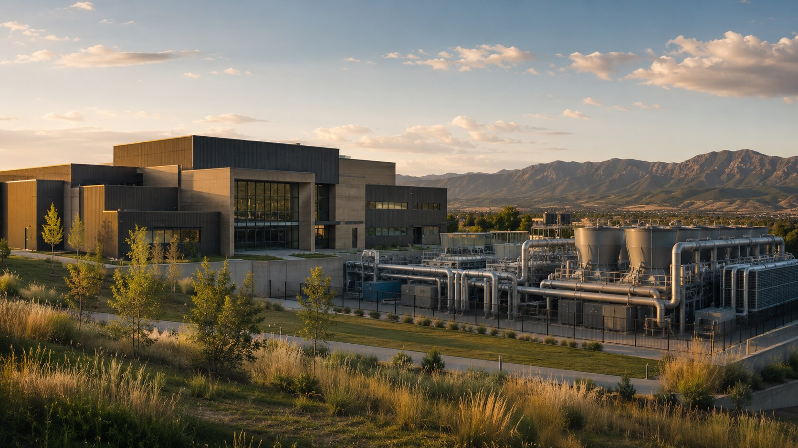
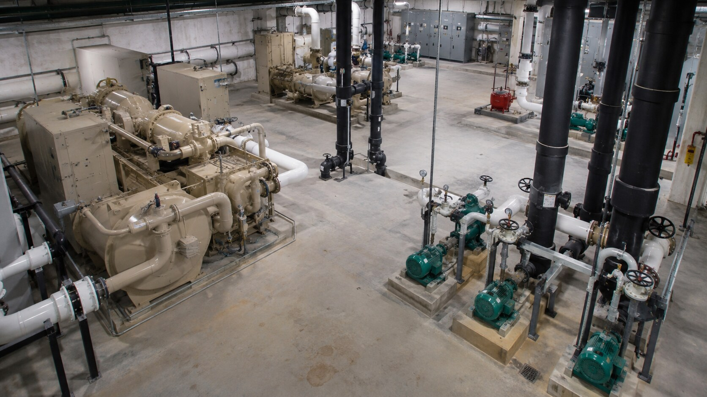

Plans + specifications
Current plans, specifications, equipment schedules, narratives, or early design concepts.
Start a project
Share the plans, equipment requirements, operating constraints, procurement status, or early concept. We will identify the technical information, coordination points, and next steps needed to move the project forward.
Discuss your project →
Project conversations
The earlier we can understand the full mechanical system, the better we can identify constructability, procurement, sequencing, and commissioning risks.
Send the information you have—even if the project is still taking shape. We can begin with plans, equipment schedules, operating constraints, or a conversation about the facility.

Project inquiry
Share the available project information, and we will review the system requirements, operating constraints, schedule, and next coordination steps.
Project information
Current plans, specifications, equipment schedules, narratives, or early design concepts.
Target milestones, known lead times, procurement status, and required turnover dates.
Facility operations, allowable outages, phasing, access, security, and uptime requirements.
Equipment, controls, piping, electrical interfaces, commissioning needs, and open questions.
Execution priorities
Data centers
✓Municipal facilities
✓Public institutions
✓Central cooling plants
✓Critical operations
✓Mechanical plant upgrades
✓